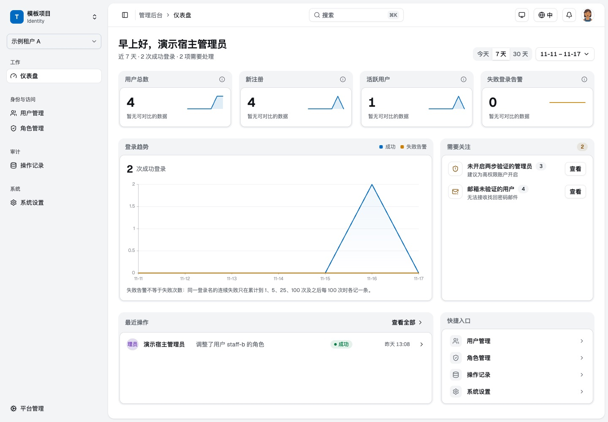
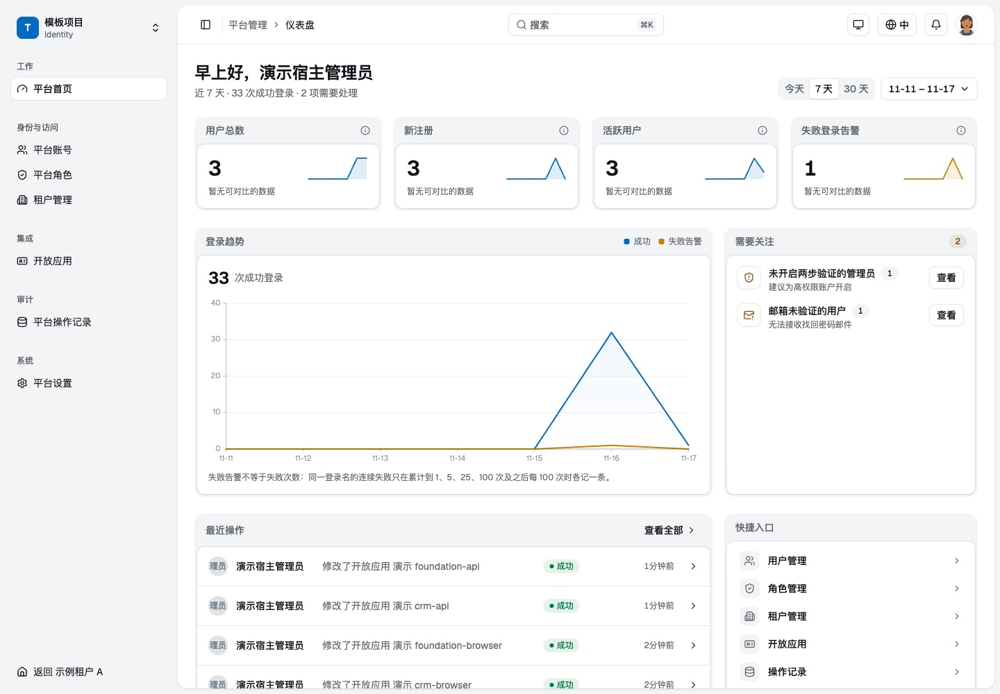

侧栏顶部的上下文位告诉用户现在在哪个范围，底部的入口负责切换范围。租户选择框和平台管理入口用同一套尺寸和颜色规则，让人一眼看出"现在在租户里"还是"现在在平台上"。
左边是演示站实测截图，右边是方案实物。
现状

方案
现状

方案
侧栏收起成图标时，上下文位只留图标块，悬停提示租户名或"平台管理"；点租户图标块会先展开侧栏再打开下拉。暗色主题沿用同一套颜色规则。
| 元素 | 何时出现 | 样式 | 图标 |
|---|---|---|---|
| 租户选择框 | 平台人员有多个租户可进时，在租户上下文显示 | 高 32px；bg-primary/10、border-primary/30；文字加粗 | lucideBuilding2（主色），右侧 lucideChevronsUpDown |
| 平台标识 | 平台上下文 | 同尺寸；bg-foreground、text-background（反色）；不可点击 | lucideShieldCheck |
| 平台管理入口 | 有平台权限的人员在租户上下文 | 高 40px，26px 反色图标块，悬停时出现背景 | lucideShieldCheck，右侧 lucideChevronRight |
| 返回租户入口 | 平台上下文，且有可返回的租户 | 同上，图标块用主色 | lucideBuilding2，右侧 lucideCornerDownLeft |
| 租户用户、单租户人员 | 只能在自己的租户里 | 不显示选择框，也不显示平台入口（与现在一致） | — |
| 关闭多租户 | 没有租户概念 | 上下文位和底部入口都不出现 | — |
平台不用琥珀色：页头的"模拟登录中"提示已经用了琥珀警告色，再用会让人误以为平台管理是一种警告状态。反色只用主题自带的前景色和背景色，不新增颜色变量，暗色主题自动反过来。